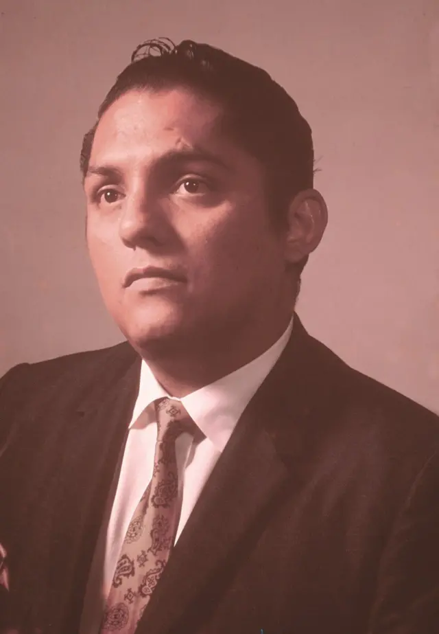

Julio Jaramillo "El Ruiseñor de América"
Biografía
Julio Alfredo Jaramillo Laurido (Guayaquil, Ecuador, 1 de octubre de 1935 - 9 de febrero de 1978), conocido popularmente como "J.J.", "El Ruiseñor de América" o "Mister Juramento", fue un cantante y compositor ecuatoriano que alcanzó gran fama y reconocimiento internacional por sus interpretaciones en diversos géneros musicales, principalmente el pasillo, el bolero y el vals. Nacido en el seno de una familia humilde en Guayaquil, desde joven mostró un gran talento y pasión por la música. Comenzó su carrera artística en la década de 1950, participando en concursos de radio y cantando en diversos escenarios locales. Su voz melodiosa y su estilo interpretativo lleno de sentimiento rápidamente lo hicieron destacar. Su primer gran éxito a nivel nacional llegó con la canción "Nuestro Juramento" en 1957, un bolero que se convirtió en un himno romántico y que lo catapultó a la fama. A partir de este momento, su carrera despegó a nivel internacional, realizando giras por toda América Latina y grabando numerosos discos que se vendieron por millones. Julio Jaramillo grabó una extensa discografía que incluye cientos de canciones en diversos géneros, como pasillos ("El Mendigo", "Sombras", "Fatalidad"), boleros ("Nuestro Juramento", "Ódiame", "Esta Pena Mía"), valses, tangos y música folclórica ecuatoriana. Su voz inconfundible, su capacidad para transmitir emociones y su carisma en el escenario lo convirtieron en un ídolo para muchas generaciones. A lo largo de su carrera, colaboró con numerosos artistas y realizó presentaciones memorables en importantes escenarios de América Latina. Su música trascendió fronteras e idiomas, y sus canciones siguen siendo escuchadas y admiradas en la actualidad. A pesar de su éxito artístico, su vida personal estuvo marcada por altibajos y una intensa vida bohemia. Falleció prematuramente a los 42 años en Guayaquil, dejando un vacío irremplazable en la música latinoamericana.
Estilo Artístico
Se caracterizó principalmente por su interpretación vocal emotiva y emocionada, centrada en los géneros de la música popular latinoamericana, especialmente el bolero y el pasillo.
- Clara y Expresiva: A pesar de la intensidad de sus interpretaciones, su dicción era clara, permitiendo que el público entendiera cada palabra de las letras, lo cual era fundamental en géneros como el pasillo y el bolero, donde la poesía de las letras es importante.
- Dominio del Ritmo y la Melodía: Tenía un gran sentido del ritmo y la melodía, adaptando su voz a los diferentes géneros que interpretaba, desde la cadencia melancólica del pasillo hasta el ritmo más marcado del bolero.
- Dominio del Ritmo y la Melodía: Tenía un gran sentido del ritmo y la melodía, adaptando su voz a los diferentes géneros que interpretaba, desde la cadencia melancólica del pasillo hasta el ritmo más marcado del bolero.
- Carisma y Conexión con el Público: Su carisma personal se proyectaba en sus interpretaciones, creando una conexión especial con su público. Su manera de sentir la música se contagiaba a quienes lo escuchaban.
- Versatilidad de Géneros: Aunque se le asocia principalmente con el pasillo y el bolero, también interpretó valses, tangos y música folclórica ecuatoriana, mostrando su versatilidad vocal.
- Emoción y Sentimiento: Su estilo se caracterizaba por la profunda emoción que transmitía en cada interpretación, logrando que el público sintiera cada palabra y nota de sus canciones.
- Estilo Clásico y Romántico: Su estilo se enmarcaba dentro de la tradición de la canción romántica latinoamericana, sin buscar rupturas formales, sino más bien la excelencia en la ejecución y la transmisión de la emoción.
- Pasillos
- El Alma en los Labios
- Romance de mi Destino
- Mi Viejo y Querido Guayaquil
- Reír Llorando
- Ojos que Matan
- La Canción de los Andes
- Boleros
- Sombras
- Fatalidad
- Odiame
- Rondando tu Esquina
- Nuestro Juramento
- Cinco Centavitos
- El Aguacero
- Valces
- Rosario de Besos
- Lagrimas de Amor
- Tu Duda y la Mía
- Alma Mía
- Tangos
- Nostalgias
- Uno
- Volver
- Cambalache
- Otras Canciones Populares
- De Cigarro en Cigarrro
- Amor de Lejos
Lista Detallada de Canciones
Éxitos Musicales Destacados
NUESTRO JURAMENTO
EL AGUACATE